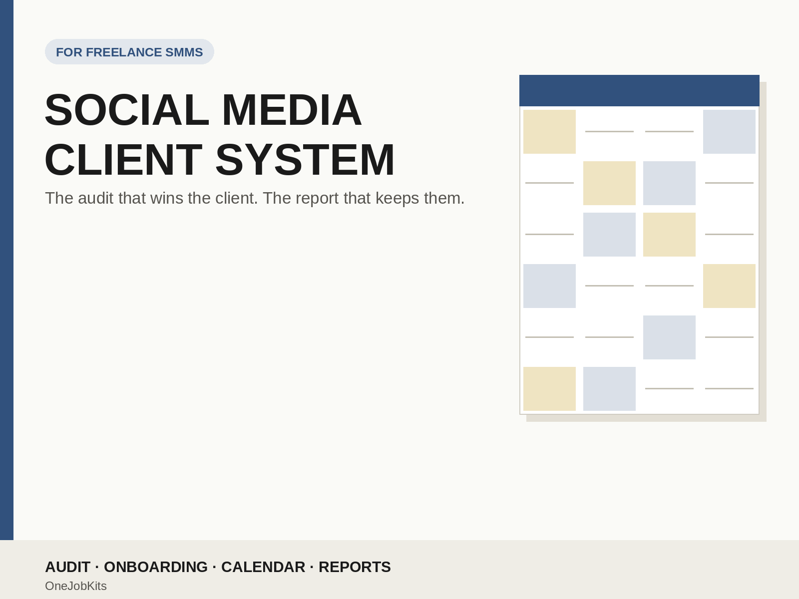

OneJobKits · Kit #38
Social Media Manager Client System — social media manager templates

Clients rarely leave a social media manager over captions. They leave over chaos: no audit they understood, onboarding that lived in a DM thread, a calendar that existed until it didn't, and a monthly report that read like a victory speech. A joined-up set of social media manager templates is the opposite of that chaos — one system that takes a client from first audit to monthly report on the same spine, so every deliverable looks like it came from one professional business.
This page gives you the first page of that audit free, right here: the mini scorecard. Below it is the full system — the scored audit workbook, the client-facing audit document, onboarding, a twelve-month calendar, reporting and a strategy deck. One honesty note that runs through every file: this system promises no growth numbers, to your clients or to you. Its report template writes the honest-attribution rule into page 1 — if enquiries cannot be traced to social honestly, the report says so.
Free download — start with the SMM Audit Mini
The SMM Audit Mini is a 2-page PDF — the first page of the full audit, free. Page 1 is a checklist you can score for any account in about fifteen minutes: six checks, each scored 0–5 — profile photo and name reading clearly at thumbnail size, a bio that says who, what and where in one breath, a link that leads somewhere that takes bookings, at least eight posts in the last 30 days, captions ending with one clear action, and replies landing within a day. Under 20 of 30, the mini tells you plainly, the foundations are the work. Page 2 names the three leaks the kit's author finds most — the link that goes nowhere useful, captions that end in mid-air, and the invisible offer — and why fix order matters: profile first, volume second. The mini is free here, on this page — there is no separate free listing to chase.
Download the free SMM Audit Mini (PDF)
What the mini does not do: it scores six checks on paper, with no weighting, no competitor view, no fix checklist and nothing a client can be handed. The full system below weights eleven criteria by formula, turns the scores into a client-facing audit with the leaks in fix order, and then carries the same client through onboarding, a year of calendar and monthly reports that tell the truth.
What's inside the full system
- Social Media Audit Workbook (Excel + Google Sheets, 5 sheets) — the Audit Scorecard: 11 criteria, weights stored as real percentages, weighted scores calculated by formula · Competitor Scan — three accounts read honestly, for the gaps they leave open · Profile Fix Checklist — the fixes in fix order · the four Content Pillars (Teach, Show, Prove, Invite) · the 90-Day Plan in phases
- Audit Template (PDF, 5 pages) — the client-facing audit: the short version first, the scores table, the leaks in fix order, competitors read honestly, the 90-day plan and the next steps
- Client Onboarding Pack (fillable PDF, 4 pages, 17 fields, 25 checkboxes) — client intake, brand voice questionnaire, access & assets checklist, and a kickoff agenda & working agreement with signature lines
- Content Calendar (Excel + Google Sheets) — 12 monthly sheets built on the Teach → Show → Prove → Invite pillar rotation, with hook, format, platform and status columns
- Monthly Report Template (PDF, 4 pages) — page 1 is the truth in five lines, with the honest-attribution rule written in; then the best three posts, the quiet three with a decision for each, next month's plan and its one named experiment
- Strategy Deck (PDF, 10 slides, landscape) — the quarter in one deck: where the accounts are, where they go, what it takes
- Setup Guide (PDF, 2 pages) — setup checks, the client rhythm, and a map of which file does which job
- Pro ($59) adds: three Niche Packs — Real Estate · Beauty Business · Restaurant & Café (each 2 pages: tuned pillars, hooks written for the niche, a starter month calendar, and the niche's compliance traps in plain words) — and 24 Post Templates (PNG, 1080×1080)
A filled example — so you can see the finished thing
The example below is built from the Audit Scorecard's own 11 criteria, applied to a fictional client — Juniper Corner Café, an invented neighbourhood café. Juniper Corner does not exist, and its scores are a sample scoring worked for this page to show the method — not results, and not a promise about any real account:
| From the audit | What the sample scoring shows (sample — fictional) |
|---|---|
| Scorecard, foundations | Profile photo & name clarity scores 4 of 5 and the bio 4 of 5 — the café is findable and says who, what and where. The link, though, scores 1 of 5: it leads to a generic link page where booking a table is the fourth door, not the first |
| Scorecard, rhythm | Posting consistency is the heaviest-weighted criterion (12%) and scores 2 of 5 — five posts in the last 30 days, in two bursts. Pillar balance scores 2 of 5 as well: almost everything is food photography (Show), with nothing that Teaches and nothing that Invites |
| Scorecard, conversation | Captions ending with one clear action score 1 of 5 — most end mid-air, with no action at all. Engagement replied to within a day scores 3 of 5, reviews and user content used as content scores 1 of 5, and offers visible without digging scores 2 of 5 — the lunch offer exists, but only in stories that expire |
| The leaks, in fix order | Leak 1: the link goes nowhere useful — fix the door before anything else. Leak 2: captions end in mid-air — every caption closes with exactly one action. Leak 3: the offer is invisible — pin the offer post and state the booking route plainly. Each leak is written with its fix, as the client-facing Audit Template requires: no leak without a fix, no fix without an owner and a date |
| The first 90-day phase | Phase 1 — Foundations (weeks 1–3): profiles fixed from the Profile Fix Checklist, the four pillars set for this café, and a backlog of 12 posts built before the rhythm phase begins. The plan's own rule applies: foundations, rhythm, then reach — and no growth numbers promised at any phase |
That is the audit working as designed: eleven weighted scores become three leaks in the order a month of work should meet them, and the client's first phase is named before a single post is written.
Who it is for
Freelance social media managers and small SMM studios who run client accounts end to end — audit, onboarding, content, reporting — and want those deliverables to share one structure and one voice. It suits managers who sell a professional process, report honestly even in quiet months, and would rather rebuild a client's foundations than post more content into a leaky profile.
Who it is not for
Anyone looking for growth promises, viral formulas or marketing advice — there are none in here, on purpose; this is admin and templates. It is also not legal or financial advice: the working-agreement wording is business paperwork, and for large engagements a local attorney should review what you sign. And it does not run accounts for you — no scheduling, no posting, no platform connections; it organises the work you do.
Questions buyers ask
- Do I get Excel or Google Sheets — or both?
- Both, for both workbooks. The Audit Workbook and the Content Calendar each ship as an Excel file and an identical Google Sheets twin, so you work in whichever your practice already uses. The audit's formulas — the weighted-score column on the scorecard — are live spreadsheet formulas with the criterion weights stored as real percentages, not typed-in results, so a score you change recalculates the weighted total.
- How does the Audit Scorecard actually work?
- You score each of 11 criteria from 0 to 5: profile photo & name clarity, the bio stating who + what + where, the link leading somewhere useful, current highlights and pinned posts, posting consistency over the last 30 days (the heaviest weight, 12%), content pillar balance, hook quality, captions ending with one clear action, engagement replied to within a day, reviews and user content used as content, and offers visible without digging. The weighted column is a formula. The workbook's own rule: a total under 55% means fix foundations before volume.
- What is the difference between the workbook and the Audit Template PDF?
- The workbook is your working file — scores, competitor scan, fix checklist, pillars and the 90-day plan, calculated as you type. The Audit Template (PDF, 5 pages) is what the client receives: the short version first — three strengths, three leaks, one first move — then the scores table, the leaks in fix order with a fix, an owner and a date for each, an honest read of three competitors, the 90-day plan and the next steps. Numbers stay in the workbook; the story the client reads lives in the template.
- What does the onboarding pack cover?
- Four fillable pages (17 fields, 25 checkboxes) that replace the DM thread. The client intake captures the business, its offer and the one result social media must produce this quarter. The brand voice questionnaire records the client's own words — three words the brand is, three it never is — which you can quote back in captions for a year. The access & assets checklist ticks off logins, page roles and logo files as received, so missing access is chased before the first post, not after. The kickoff agenda & working agreement, with signature lines, sets how the work will run.
- How does the monthly report handle a quiet month?
- Honestly, by design. Page 1 is the truth in five lines — posts published, reach, profile visits, link taps or booking clicks, and enquiries traceable to social — with the honest-attribution rule written into the template: if enquiries can't be traced honestly, the note says so. Then come the best three posts and why they won, the quiet three — each with a written decision: repeat differently, rest the format, or retire it — and next month's plan with its one named experiment. A report that only celebrates teaches the client to distrust the good months too.
- What does Pro add?
- Three Niche Packs and the post templates. Each niche pack (2 pages, for Real Estate, Beauty Business, and Restaurant & Café) tunes the four pillars to that trade, provides hooks written for the niche, lays out a starter month calendar, and names the niche's compliance traps in plain words — fair-housing care in real estate, health-claim care in beauty, allergen and alcohol care in food. The 24 Post Templates are PNG files at 1080×1080, ready to adapt for recurring post types.
- What does the free mini cover, and what does the full system add?
- The free SMM Audit Mini is 2 pages: six checks scored 0–5 — the fifteen-minute version of the audit — plus the three leaks the kit finds most (the link that goes nowhere useful, captions that end in mid-air, the invisible offer). The full system weights 11 criteria by formula, adds the competitor scan and fix checklist, turns the audit into a client-facing document, and then runs the whole engagement: onboarding, a 12-month calendar, monthly reports and a strategy deck — and in Pro, the three niche packs and 24 post templates.
Prices
Base: $39 · Pro (adds three niche packs and 24 post templates): $59 — one-time payment, digital download. No subscription; the files are yours.
Can't find the kit you need?
We build it. Ask us — first asker gets it at half the shelf price. Tell us the job at onejobkits.com and we will build the kit for it.
Related kits
Please know: this kit is admin and templates only — not marketing, legal or financial advice — and no growth numbers are promised anywhere in it, to your clients or to you. The working-agreement wording is business paperwork; for large engagements, have a local attorney review what you sign. Handle client logins and data under your own privacy terms. All example data is fictional (Juniper Corner Café is invented, and the example above says so).